JustRide manual
JustRide turns a Waveshare ESP32-S3-Touch-LCD-4 into a head unit for a Wahoo KICKR Core: free rides with virtual gears, structured workouts in ERG mode, ride files on a microSD card, and a statistics page in your browser. No cloud, no account.
Status: the firmware compiles but has not run on real hardware yet. Expect to fix things during the first bring-up (see Troubleshooting) and send logs back. The screenshots are rendered from the firmware's own screen code on a computer; on the device they should look the same.
1. What you need
| Item | Notes |
|---|---|
| Waveshare ESP32-S3-Touch-LCD-4 (V3) | Check the version printed on the board. V4 may need pin changes. |
| microSD card, 32 GB or smaller | Formatted FAT32. Any speed class is fine. |
| Plain 5 V USB-A power supply + USB-A to USB-C cable | An old phone charger (5 V, 1–2 A) is ideal. See Safety. |
| Wahoo KICKR Core | Bluetooth FTMS is used. Update its firmware with the Wahoo app once. |
| Heart-rate strap (optional) | Any Bluetooth strap (standard heart-rate service). Each rider can have their own. |
| Zwift Ride (optional) | Shifting and ride control from the handlebar. |
| A Mac or PC | For building/flashing the firmware and preparing the SD card. |
No soldering, no extra wires.
2. Safety
Power the board only from a plain 5 V USB supply or your computer's USB port. Never use a laptop or phone fast charger (USB-C PD, up to 20 V): Waveshare reports that these burn protection parts on this board.
Built-in limits you can rely on while riding:
- ERG targets are capped at the rider's Max ERG setting (default 600 W) and never exceed 1500 W, whatever a workout file says.
- When you pause, stop, or are on the home screen, the trainer is set to its lowest resistance.
- Stop needs a long press, so a stray tap mid-interval doesn't end the ride.
- Simulated gradients are limited to −10 … +20 %.
- Your FTP is never raised automatically; the device only offers a new value after a ride.
- Wi-Fi is switched off as soon as a ride starts.
- The firmware never runs a trainer spin-down and never writes to the board's battery/power chip.
Before a hard session, make sure the trainer and bike are set up as usual: the head unit only sends targets, it can't make the trainer itself safer.
3. One-time setup
3.1 Install the tools (macOS)
xcode-select --install # Apple's compiler and git (skip if already installed)
brew install cmake ninja dfu-util python3 node
mkdir -p ~/esp && cd ~/esp
git clone -b v5.3.2 --recursive https://github.com/espressif/esp-idf.git
./esp-idf/install.sh esp32s3This puts the ESP-IDF toolchain in ~/esp/esp-idf (about 3 GB, 10–20 minutes). You only do this once and never need to work inside that folder afterwards.
(Windows/Linux: follow Espressif's “ESP-IDF Get Started” guide for v5.3, then continue below.)
3.2 Build and flash
You can build without the board; it only proves the code compiles. For flashing, connect the board to your computer with the USB-C cable.
In every new terminal, load the tools first, then change into this repository (not ~/esp), because idf.py builds the project in the current folder:
. ~/esp/esp-idf/export.sh # makes idf.py available in this terminal (works from any folder)
cd ~/Workspace/JustRide # the repository: wherever you cloned it
idf.py set-target esp32s3 # first time only
idf.py build
idf.py -p /dev/cu.usbmodem* flash monitor- The first build downloads LVGL, the display/touch drivers and mDNS (needs internet once). Build output goes to
build/inside the repository (ignored by git). - If flashing fails with “no serial port”: hold the BOOT button, plug the cable in, release BOOT, and flash again.
monitorshows the log. Leave it with Ctrl+].- After a firmware change that edits
sdkconfig.defaults(e.g. the Bluetooth roles), deletesdkconfigonce (rm sdkconfig) so the new defaults are used; your oldsdkconfigotherwise keeps the previous settings.
3.3 Prepare the SD card
On your computer, with the card inserted (here it's mounted as /Volumes/JUSTRIDE):
tools/vendor_stats.sh # once: downloads the statistics libraries (needs Node + internet)
tools/sd_deploy.sh /Volumes/JUSTRIDE # copies the statistics app and sample workoutsThe card then contains:
/www/stats/ statistics app
/workouts/ .zwo workout files (two samples)
/rides/ one folder per rider, filled by the device
/config/ settings.json, gears.json (created on first boot)Eject the card and put it in the board's microSD slot (contacts facing the board). Insert or remove the card only while the board is unplugged.
3.4 First start
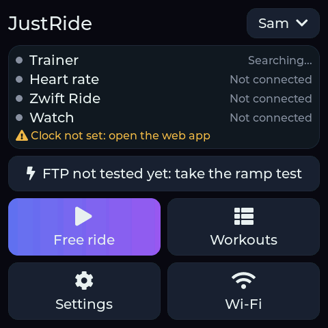
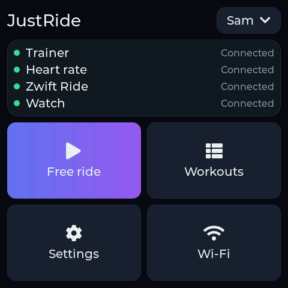
Power the board. The home screen shows the active rider (top right), the connection status of trainer, heart-rate strap and Zwift Ride, and the tiles Free ride, Workouts, Settings, Wi-Fi. Warnings (no SD card, clock not set) appear in orange under the status.
On first boot the device writes /config/settings.json with one rider called “Rider” and a random password for its own Wi-Fi hotspot. Rename the rider and set your values on the device (Riders). Your home Wi-Fi is set in settings.json on your computer: unplug the board, move the card, edit, move it back:
"wifi_ssid": "MyHomeWifi",
"wifi_password": "secret",settings.json is a plain text file, so anyone with the card can read the Wi-Fi password in it. The full file is described in the Settings reference.
3.5 Connect the trainer, heart-rate strap and Zwift Ride
- Close Zwift, the Wahoo app and any other app that might connect to the KICKR or the Zwift Ride.
- Pedal a few strokes to wake the KICKR.
- The status changes from Trainer: searching… to Trainer: connected (usually within a few seconds).
- Put on the heart-rate strap (moisten the contacts); it connects the same way.
- Wake the Zwift Ride by pressing a button. The home screen shows Zwift Ride: connected.
The device remembers the first trainer and Zwift controller it finds and from then on connects only to those. The heart-rate strap is remembered per rider: when you switch riders, the device disconnects the previous strap and looks for the new rider's. A rider without a strap gets the first one it finds, so have only your own strap on when pairing it.
To pair different devices: Settings → Forget paired devices. This forgets the trainer, the controller and the active rider's strap; other riders keep theirs.
3.6 Set the clock
Ride files are named after the start time. The board has a battery-backed clock, but it has to be set once: turn on Wi-Fi with your home network configured (see Wi-Fi). The device fetches the time from the internet and stores it. Until then the home screen shows Clock not set. Rides still record, but with wrong dates.
4. Riders
Up to 8 people can share the device. Each rider has their own:
- rides and statistics (folder
/rides/<id>/on the card), - FTP, Max ERG, weight and max heart rate,
- heart-rate strap.
The trainer and the Zwift Ride are shared.
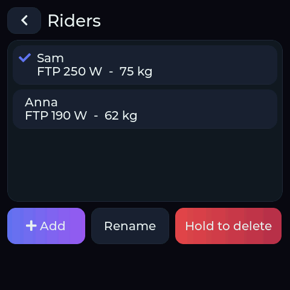
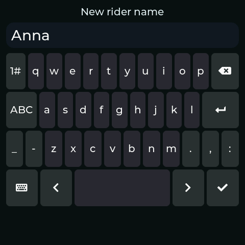
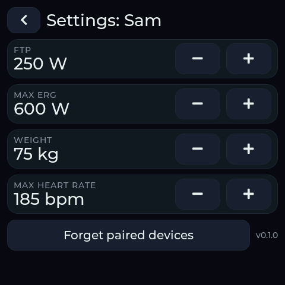
Switch, add, rename, delete
- Switch: tap your name at the top right of the home screen, then a name. Only possible while no ride is running.
- Add: Add, type a name (1–15 letters, digits or spaces), confirm with ✓. The new rider becomes active and starts with FTP 200 W, Max ERG 600 W, 75 kg, max HR 185.
- Rename: renames the active rider.
- Delete: press and hold Hold to delete. This deletes the active rider; the last rider can't be deleted. Their ride files stay on the SD card.
Per-rider settings
| Setting | Steps | Range | Used for |
|---|---|---|---|
| FTP | ±5 W | 50–600 W | Workout targets, zones, IF and TSS |
| Max ERG | ±50 W | 100–1500 W | Highest ERG target the device will ever send for this rider |
| Weight | ±1 kg | 30–200 kg | W/kg in the statistics |
| Max HR | ±1 bpm | 100–230 | Heart-rate zones in the statistics |
Weight doesn't change how hard the trainer feels: the trainer's simulation protocol has no weight field.
FTP from your rides
After every ride of 20 minutes or longer, the device takes 95 % of your best 20-minute power in that ride. If that is higher than your current FTP, the summary screen offers Set FTP to … W (see After the ride). One tap accepts it; otherwise nothing changes. It is never applied on its own, because a single bad power reading would otherwise raise every future ERG target.
The statistics app shows the same estimate over all your rides (Power curve).
5. Riding
Free ride
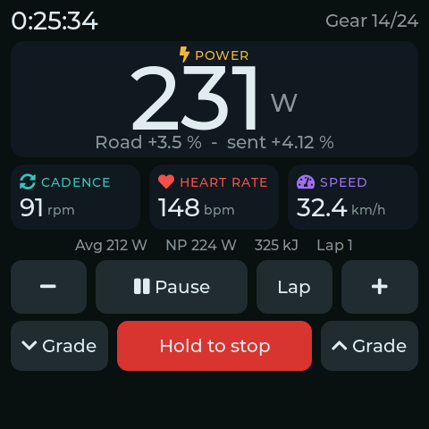
Tap Free ride. The trainer simulates a road; you change virtual gears with − and + and the road's gradient with ⌄ Grade / ⌃ Grade (0.5 % steps). Road is the gradient you chose, sent is what the trainer gets after the virtual gear is applied.
The large number is your power (3-second average). Below it: cadence, heart rate and speed, then average power, NP, energy and lap.
Leave the bike's real chain in one gear, by default 34 × 17 (front × rear). Virtual gears make the trainer harder or easier as if you shifted. If your real gear is different, set real_ratio in gears.json (see Settings reference).
Ride screen controls
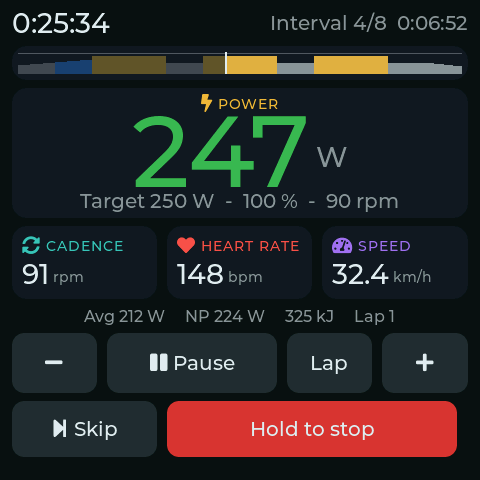
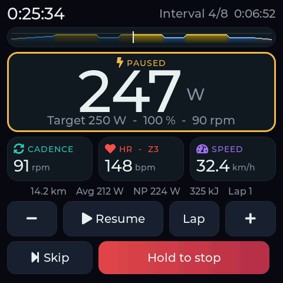
In an ERG segment the power number turns green while you are within 5 % (at least 5 W) of the target.
| Control | Free ride / free segment | ERG workout segment |
|---|---|---|
| − / + | virtual gear down / up | intensity −5 % / +5 % (50–150 %) |
| ⌄ Grade / ⌃ Grade | road gradient | hidden |
| Skip | – | jump to the next interval |
| Pause | timer stops, lowest resistance | same |
| Lap | starts a new lap in the ride file | same |
| Hold to stop | press and hold to end the ride | same |
Zwift Ride buttons
| Button | Action |
|---|---|
| Shift up / down (either side) | same as + / − on screen: virtual gear, or ERG intensity ±5 % |
| D-pad up / down | road gradient +/− 0.5 % (free ride) |
| A (short) | pause / resume; on the summary screen: done |
| A (hold 1 s) on the home screen | start a free ride |
| Y (short) | lap |
| D-pad right (hold 1 s) | skip to the next interval |
| B (hold 1 s) | stop the ride |
Menus (riders, workout list, settings, Wi-Fi) are touch-only.
The button layout is based on other people's reverse-engineering and is not yet verified on a real Zwift Ride. If a button does the wrong thing or nothing, see Troubleshooting.
Beeps: 1 = next interval in 3 seconds, 2 = new interval started, 3 = workout finished (you continue in free ride until you stop).
After the ride
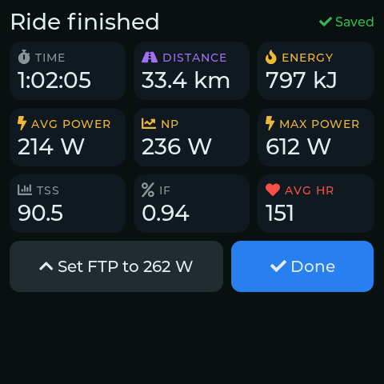
The summary shows time, distance, energy, average, normalized and maximum power, TSS, IF and average heart rate, and at the top right whether the ride was saved. If the ride suggests a higher FTP, Set FTP to … W appears (see FTP from your rides). Tap Done.
The ride is saved as .csv and .fit in the rider's folder /rides/<id>/. Rides shorter than 60 seconds are discarded.
If the power fails mid-ride, the ride is not lost: everything up to the last 10 seconds is on the card, and the FIT file and summary are completed on the next start, for the rider who was riding.
Record on an Apple Watch too
The head unit also shows up as a Bluetooth power and cadence sensor called JustRide. It passes on the trainer's power and cadence (the same numbers as on the ride screen), so an Apple Watch records the ride in the Fitness app with your watch's heart rate and calories. A bike computer (Garmin, Wahoo) can connect the same way. Nothing can control the trainer through it: it only sends numbers.
- Once: turn on the head unit. On the Apple Watch (watchOS 10 or later) open Settings → Bluetooth, wait for JustRide under Health devices and tap it.
- Each ride: start Indoor Cycle in the Workout app on the watch, then start the ride on the head unit. The watch shows the power and cadence from the head unit.
- The watch records the ride in Apple Health / Fitness; the head unit still saves its own FIT and CSV files as usual.
Up to two receivers can connect at once. The watch's own heart rate stays on the watch; for heart rate on the head unit, use a chest strap.
6. Workouts
Workouts are Zwift .zwo files in /workouts/ on the SD card, shared by all riders. Power is always given as a fraction of FTP (0.9 = 90 %), so the same file fits every rider: the device scales it to the active rider's FTP.
Choose and check a workout
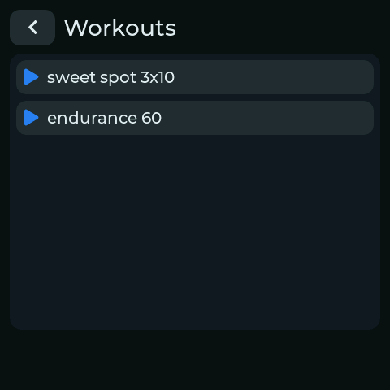
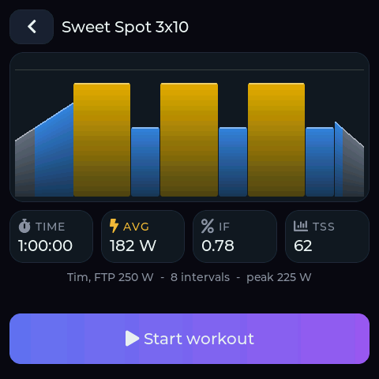
Tap Workouts, then a workout. The preview shows:
- the profile: each bar is the target power over time, coloured by zone (grey < 60 %, blue < 76 %, green < 90 %, yellow < 105 %, orange < 118 %, red above). The thin line is 100 % FTP. Free-ride parts are dark and flat;
- duration, average watts, IF and TSS if you ride it exactly on target (free-ride parts are counted as 50 % FTP), and the peak target in watts.
Tap Start workout to ride it, or ‹ to go back. During the ride a small copy of the profile sits under the timer: the part you have done is dimmed and a white line marks where you are.
Design your own
Option 1: export from another app. Many workout tools can save or export Zwift .zwo files, for example the workout editor in the Zwift app (it saves to Documents/Zwift/Workouts/), workout libraries such as whatsonzwift.com, or the workout builder in intervals.icu (look for a Zwift / .zwo export). Copy the file to the card or upload it over Wi-Fi.
Option 2: write it yourself. A .zwo file is plain text; any text editor works. Durations are in seconds, power is a fraction of FTP:
<workout_file>
<name>Threshold 2x20</name>
<workout>
<Warmup Duration="600" PowerLow="0.5" PowerHigh="0.75"/>
<IntervalsT Repeat="2" OnDuration="1200" OffDuration="300" OnPower="0.95" OffPower="0.55" Cadence="90"/>
<Cooldown Duration="300" PowerLow="0.6" PowerHigh="0.4"/>
</workout>
</workout_file>That is 10 min warm-up rising from 50 to 75 %, two 20-minute blocks at 95 % with 5 minutes easy in between, and 5 min cool-down. The building blocks, in the order you list them:
| Element | Attributes | What it does |
|---|---|---|
SteadyState | Duration, Power | constant target |
Warmup, Cooldown, Ramp | Duration, PowerLow (start), PowerHigh (end) | target changes evenly from start to end |
IntervalsT | Repeat, OnDuration, OffDuration, OnPower, OffPower | repeated on/off pairs |
FreeRide, MaxEffort | Duration | no target: free ride with virtual gears for that time |
| any of the above | Cadence (rpm), CadenceResting (rpm, for IntervalsT off parts) | cadence shown as a target on the ride screen |
Limits: up to 200 segments (each interval repeat counts as two), 10 hours per segment, 300 % FTP. Whatever a file says, ERG targets never go above the rider's Max ERG. Elements the device doesn't know (text messages, textevent, …) are ignored. Name files without special characters, e.g. threshold_2x20.zwo; underscores are shown as spaces.
Check a new workout on the device with the preview before you ride it: if the profile looks wrong or the workout doesn't appear, the file has a typo (open it in a browser: it shows XML errors).
7. Wi-Fi, statistics and ride files
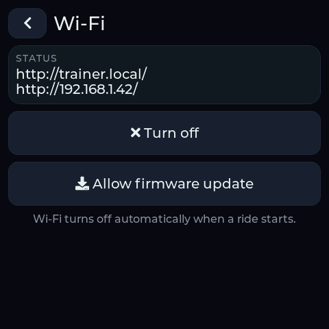
Wi-Fi is only for when you're not riding. On the home screen tap Wi-Fi → Turn on. The screen shows how to reach the device:
- Home network (if
wifi_ssidis set): openhttp://trainer.local/(or the IP address shown) in a browser on the same network. - Own hotspot (if no home network is set, or it isn't reachable within 15 seconds): connect your phone/laptop to the Wi-Fi JustRide with the password shown on the screen, then open
http://192.168.4.1/.
The start page lists every rider's ride files (click to download; the .fit files can be uploaded to intervals.icu, Strava, Garmin Connect, …), lets you upload .zwo workouts, and links to the statistics app. It runs entirely in your browser and needs no internet connection. Pick the rider at the top; it starts with the rider who is active on the device.
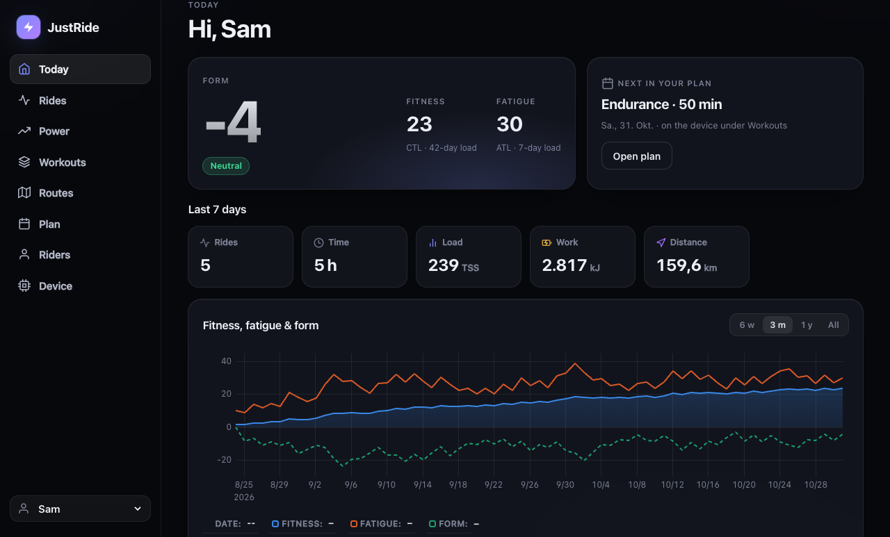
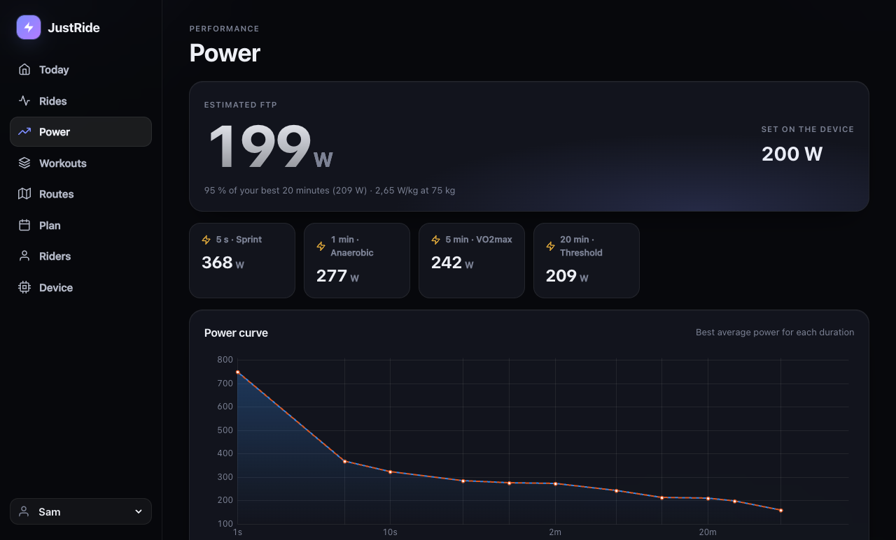
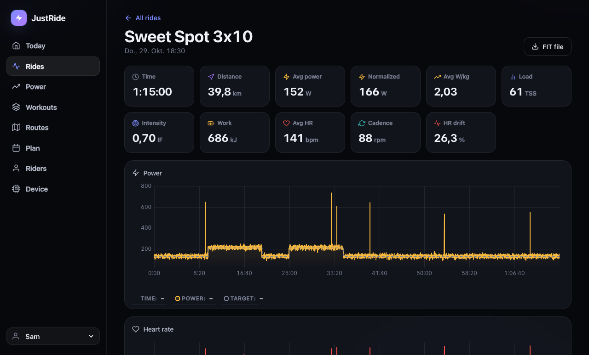
SQL: query summary, bests and ride (the last opened ride) of the selected rider yourself.
The screenshots show generated sample rides. Wi-Fi turns off automatically when you start a ride.
8. Firmware updates
Over USB: idf.py -p /dev/cu.usbmodem* flash as in 3.2.
Over Wi-Fi:
- Build on your computer:
idf.py build→ the file isbuild/justride.bin. - On the device: Wi-Fi → Turn on → Allow firmware update. After this tap the device accepts one update within 5 minutes; without it the device refuses them, so nobody else on your network can flash it. Tap again for another try.
- On the device's start page choose the
.binunder Firmware update. Don't unplug the board while it says “flashing”. - The device restarts. If the new firmware fails to start, the device automatically goes back to the previous one.
9. Settings reference
/config/settings.json
Riders are easiest to manage on the device; the file is mainly for Wi-Fi. An example:
{
"user": "u1",
"next_user_id": 3,
"users": [
{ "id": "u1", "name": "Sam", "ftp_w": 250, "max_erg_w": 600, "weight_kg": 75, "max_hr": 185 },
{ "id": "u2", "name": "Anna", "ftp_w": 190, "max_erg_w": 450, "weight_kg": 62, "max_hr": 178 }
],
"crr": 0.004,
"cw": 0.51,
"wifi_ssid": "MyHomeWifi",
"wifi_password": "secret",
"ap_password": "k7m2xq9fha"
}| Key | Default | Range | Meaning |
|---|---|---|---|
user | first rider | Id of the active rider | |
users[].id | u1 … u9999 | Folder name under /rides/ and key for the paired strap. Ids are never reused, so a new rider never inherits someone's rides. Don't change it by hand. | |
users[].name | Rider | 1–15 chars, ASCII | Shown on the device and in the statistics |
users[].ftp_w | 200 | 50–600 | FTP; workouts are scaled to it |
users[].max_erg_w | 600 | 100–1500 | Highest ERG target the device will ever send |
users[].weight_kg | 75 | 30–200 | W/kg in the statistics |
users[].max_hr | 185 | 100–230 | Heart-rate zones in the statistics |
crr | 0.004 | 0.001–0.02 | Rolling resistance sent to the trainer in free ride |
cw | 0.51 | 0.1–2.0 | Wind resistance coefficient (kg/m) in free ride |
wifi_ssid, wifi_password | empty | Your home Wi-Fi | |
ap_password | random | 8–63 chars | Password of the device's own hotspot |
Invalid or out-of-range values are ignored and the default is used; an invalid rider entry is skipped. If the file is not valid JSON (a missing quote or comma), the device uses defaults for everything, logs settings.json is not valid JSON and leaves your file unchanged so you can fix it.
A settings.json from before riders existed (with ftp_w and max_erg_w at the top level) is taken over automatically: those values become the first rider's.
/config/gears.json (optional)
Without this file there are 24 virtual gears from ratio 0.75 to 5.5, and the real gear is assumed to be 34 × 17 (ratio 2.0).
{ "real_ratio": 2.0, "ratios": [0.75, 0.9, 1.05, 1.2, 1.4, 1.6, 1.8, 2.0, 2.25, 2.5, 2.8, 3.1, 3.5, 4.0, 4.6, 5.5] }real_ratio = front teeth ÷ rear teeth of the gear your chain is actually in. ratios: 2–30 values, ascending. The gear table is shared by all riders.
10. Troubleshooting
Keep the USB cable connected to your computer and run idf.py -p /dev/cu.usbmodem* monitor: the log explains most problems. At the jr> prompt these commands help:
| Command | What it does |
|---|---|
help | list commands |
i2c | list chips on the internal bus (expect 0x20 or 0x38, 0x51, 0x5D or 0x14) |
pattern 0 / 1 / 2 | colour bars / white / black on the screen |
sd | SD card write/read speed test |
buzz | short beep |
mem | free memory |
zap dump on / off | log every packet from the Zwift Ride as hex |
| Problem | What to try |
|---|---|
| Screen stays dark | Check the log for TCA9554 not found or I2C errors and send it. Run i2c. |
| Colours wrong, image shifted or flickering | Run pattern 0 (should be white, yellow, cyan, green, magenta, red, blue, black from left to right). Send a photo; the display settings in bsp.c need adjusting. |
| Touch doesn't react | Log says GT911 not found? Send the i2c output. |
| No SD card on the home screen | Card must be FAT32, 32 GB or smaller, inserted with the board unplugged. Run sd. |
| Trainer stays searching | Close every other app connected to the KICKR, pedal to wake it, then try Settings → Forget paired devices. |
| Wrong heart-rate strap connects | Switch to the right rider, take the other strap off (or out of range), then Settings → Forget paired devices. |
| Zwift Ride doesn't connect | Close the Zwift app (on phone, tablet and PC), press a button to wake it, check the log for zap. |
| Zwift Ride button does the wrong thing / nothing | Run zap dump on, press each button once slowly (note the order), and send the log. The button table is then corrected from your recording. |
| Trainer connects but resistance doesn't change | Check the log for request control refused or rejected; another app may still have control. |
| Board switches itself off | A known issue of this board's power chip at low load; the fix isn't implemented yet. Use the computer's USB port for now and report it. |
| Clock not set | Turn on Wi-Fi with your home network configured (needs internet). |
trainer.local doesn't open | Use the IP address shown on the device instead (some Android phones don't support .local names). |
| Firmware update refused | Tap Allow firmware update on the device first (valid 5 minutes, one upload per tap). Upload from the device's own start page; other pages and tools without the X-JustRide header are refused. |
Not supported yet: Zwift Click and Play (encrypted protocol), menu navigation with the Zwift Ride, power meters and cadence sensors other than the trainer, intervals.icu upload.
Regenerating the screenshots
The device screenshots come from tools/ui_shots/shots.sh, which compiles main/ui.c with LVGL on the computer and writes docs/img/*.png (needs one idf.py build first). Run it after changing the screens.